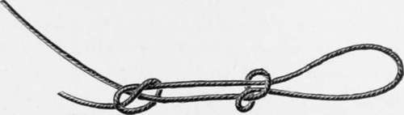
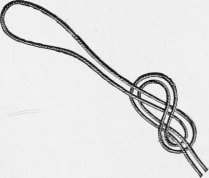
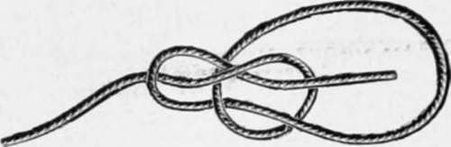
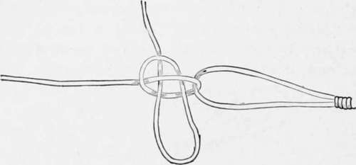
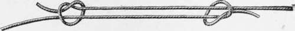
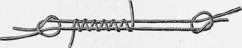
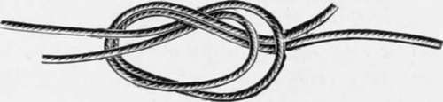

Section I. Knots And Ties
Description
This section is from the book "American Game Fishes", by W. A. Perry. Also available from Amazon: American Game Fishes: Their Habits, Habitat, and Peculiarities; How, When, and Where to Angle for Them.
Section I. Knots And Ties
The properly tied leader, hook and line, bear the same relation to "good form" in the angler, as the trim, well-finished harness of a "two-forty" trotting horse does to the good form of its owner. Imagine a symmetrical brilliant-coated pacer tied to the sulky by means of hideous knots and make-shift splices instead of smart buckles and carefully adjusted straps-neat and strong in their arrangement! Or fancy a man of reputed taste in dress promenading the streets in fine broad-cloth sewed together with twine, and pinned or tied instead of buttoned! Precisely analagous is the condition of the outfit of that angler whose good gut leaders are joined with knots that are unsightly and insecure, and whose hooks and lines are strung together according to his unskilled fancy.
The remedy is simple, and one which every follower of the "gentle craft" should be aware of. Efficient knots and ties are as easily and swiftly made as insecure and unsightly ones. A little careful attention to the following directions, and practice with a piece of common cord for one half-hour, will forever dissipate the angler's ignorance on this subject, and give him the ability to have strongly made tackle, of the appearance of which he need never be ashamed.
To plunge in mafias res of the subject, it is certain that one of the very first lessons the angler has to learn is how to tie a loop. This process seems easy enough; and so it is, it the only material to be tied is a silk or cotton line. Almost any loop will do, in such case. But assuming that gut is required to be looped, its nature requires a knot of different character to that which will serve for ordinary purpose. Gut will slip, under some circumstances, and it will become brittle under all.
How Then Ought We To Proceed?
I have experimented with all kinds of loops and ties, during the past twenty years, under all possible conditions, both in Europe and this country, and the best and most reliable knots I declare to be as follows:
Fig. i.
First, the loop for gut or any other material: rig. i shows my favorite. It is recommended by the English Alpine Club-a club of mountain climbers whose very existence occasionally depends on the reliability of a knotted cord. It will be seen to consist of two single ties-one in the free end of the line, and the other in the line itself.
Fig. 2.
When the two are drawn taut they form a perfectly secure and very neat tie, which has the merit of having each part of it under evenly distributed strain. In all knotting, this latter quality is the great desideratum.
Another loop is seen in fig. 2, and it also is a very secure one. It is easily made. The loop being formed, it is passed in a figure-8 form and drawn tight. Of course, it need scarcely be added that gut or hair should be well soaked before tying. Fig. 3 shows the famous bowline knot, and it needs no special recommendation from me. It is secure, and easily loosened; but on this latter account it is not, I think, to be unqualifiedly recommended for gut leaders.
Fig- 3.
The three loops above are all-sufficient for snells or leaders. Before leaving this part of the subject, however, I must draw attention to the best method of joining the reelline to a gut or gimp snell or leader. Fig. 4 indicates it. The tighter this is drawn the more secure it is, and yet it can be instantly undone by pulling on the free end-a consideration sometimes of great value, when time is of importance.
Fig. 4.
Junction knots serving to connect the parts of tackle-for example, leaders-need to be especially secure, and as far as possible, free from sharp and sudden angles and bearings. Usually-with the ordinarily tied leader-the breaking strain causes it to part at the knot. This need not be so, if tigs.
5 and 6 are used. Fig. 5, drawn tight, is reliable, and readily made. Fig. 6 is based on the same principles with the addition of an interlacing of horse-hair or gut, as shown. This latter acts as a buffer, like the buffer-springs of a steam-car, and does not add to the size of the knot materially. When all is drawn tight, the actual bearing is on the intervening "buffer", and of course the risk of breakage is thus reduced to a minimum. If a loop be desired in the leader, it can easily be woven in between the knots, and is absolutely secure.
Fig. 5.
Fig. 6.
One other knot may be given as reliable and convenient. Fig. 7 shows it. I give it place here as an alternative only, and do not recommend it in place of the "buffer," (fig. 6). It is the one commonly used, but is liable to snap when dry, as I have proved to my cost.
The above knots are sufficient for any and all purposes, and I need not add to this part of the subject of tackle-preparation by additional descriptions.
Continue to:
- prev: Fishing Tackle And How To Make It
- Table of Contents
- next: Section II. Lines: Gut, Hair, Silk, Gimp, Etc